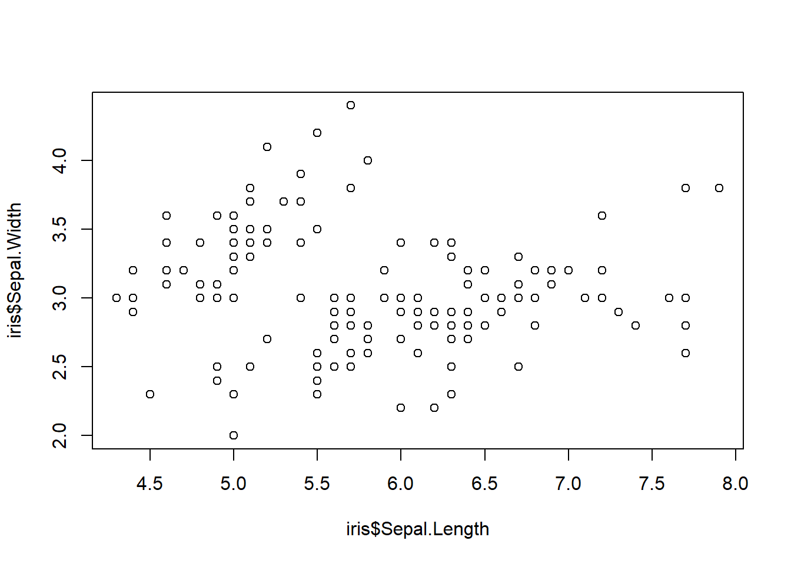

A <- 21 Pengantar
Selamat datang di modul pelatihan dasar R menggunakan RStudio! Dalam modul ini, Anda akan mempelajari dasar-dasar penggunaan RStudio untuk analisis data menggunakan bahasa pemrograman R. RStudio adalah Integrated Development Environment (IDE) yang sangat populer untuk pengembangan aplikasi R dan analisis data. Dalam modul ini, Anda akan mempelajari cara mengimpor dan mengelola data, menjalankan perintah R, dan membuat visualisasi data yang menarik menggunakan RStudio.
Pada pelatihan ini, lembar kerja pada RStudio menggunakan Quarto Markdown! Quarto adalah platform dokumentasi modern yang menyediakan format dokumen yang kaya dan mudah dibaca, serta dukungan untuk berbagai bahasa pemrograman termasuk R. Dalam modul ini, Anda akan belajar cara menggunakan Quarto Markdown untuk membuat laporan analisis data yang menarik dan profesional dengan menggunakan kode R. Mari kita mulai!
Lembar kerja pada quarto markdown

Cara buat lembar kerja baru dengan format quarto markdown


2 Pendahuluan
2.1 Assignment atau Pembuatan Objek
Kode atau program R yang akan dijalankan tersimpan dalam chunk di bawah ini. Cara mudah untuk menjalankan kode R dengan meng-klik Run Current Chunk

Kita dapat membuat chunk secara otomatis dengan kombinasi ctrl+alt+i atau klik simbol +c di pojok kanan atas.
A # Disebut objek A[1] 2A = 2
A[1] 2B <- "Halo Semua"
B[1] "Halo Semua"<- dan = serupa untuk pembuatan objek. Disarankan menggunakan <- agar tidak bertabrakan dengan argumen yang menggunakan simbol = juga.
2.2 Case-sensitive
a<-10 #Spasi tidak sensitif
A[1] 2a[1] 102.3 Penamaan objek
- Diawali huruf (A-Z atau a-z) atau titik (.)
- Tidak menggunakan spasi dan karakter spesial (!,@,#, dst)
- Tidak menggunakan atau menghindari kata yang sudah digunakan oleh R (NULL, TRUE, FALSE, q, c, t, sin, cos, dll)
2.4 Operasi dasar
# Operasi Aritmatika
x <- 5
y <- 3
x + y # Output: 8[1] 8x - y # Output: 2[1] 2x * y # Output: 15[1] 15x / y # Output: 1.666667[1] 1.666667# Operasi Logika
a <- TRUE
b <- FALSE
a & b # Output: FALSE (AND)[1] FALSEa | b # Output: TRUE (OR)[1] TRUE!a # Output: FALSE (NOT)[1] FALSE# Operasi Pembanding
x <- 5
y <- 3
x > y # Output: TRUE[1] TRUEx < y # Output: FALSE[1] FALSEx == y # Output: FALSE[1] FALSEx >= y # Output: TRUE[1] TRUEx <= y # Output: FALSE[1] FALSE2.5 Latihan
# Buatlah objek beri nama `latihan1` berisi angka 6 dan munculkan outputnya# Buatlah objek beri nama `latihan2` berisi karakter 'Halo Indonesia" dan munculkan outputnya3 Objek di R
Di R, terdapat beberapa struktur data dasar seperti vector, matrix, factor, list, dan data frame. Berikut ini adalah penjelasan perbedaan di antara struktur data tersebut:
Vector adalah struktur data satu dimensi dengan elemen-elemen yang sama jenisnya.
Matrix adalah struktur data dua dimensi dengan elemen-elemen yang sama jenisnya.
Factor adalah struktur data yang digunakan untuk menyimpan variabel kategorikal atau nominal.
List adalah struktur data yang dapat menyimpan berbagai jenis objek.
Data frame adalah struktur data yang mirip dengan matriks, tetapi memungkinkan setiap kolom memiliki tipe data yang berbeda dan sering digunakan untuk menyimpan data tabular
3.1 Vector
Membuat vektor: Anda dapat membuat vektor dengan menggunakan fungsi c(). Contohnya
Fungsi dalam R adalah kumpulan instruksi yang membentuk suatu tugas tertentu yang dapat digunakan kembali (reusable). Fungsi dalam R dapat digunakan untuk menghindari pengulangan kode yang sama, mengurangi kesalahan dalam kode, dan membuat kode menjadi lebih mudah dibaca dan dimengerti.
Fungsi c() adalah fungsi bawaan di R. Untuk mengetahui nama dan cara penggunakan fungsi caranya jalankan perintah ?c (Help dalam R).
# Memanggil objek vector
a1[1] 2 4 7 3a3[4] # Elemen ke-4 pada objek a3[1] FALSEa2[c(1,3)] # Elemen ke-1 dan ke-3 pada objek a2[1] "one" "three"a1[-1] # Seluruh elemen kecuali element ke-1[1] 4 7 3a1[2:4] # Elemen ke-2 hingga ke-4[1] 4 7 33.2 Matrix
Membuat matriks: Anda dapat membuat matriks dengan menggunakan fungsi matrix(). Contohnya
b3 <- matrix(1:14,4,4)Error atau warning seringkali terjadi karena pengunaan fungsi tidak sesuai dengan ketentuan.
Error: Fungsi gagal digunakan
Warning: Fungsi masih berjalan tapi dengan beberapa catatan
b1 [,1] [,2] [,3] [,4]
[1,] 1 4 7 10
[2,] 2 5 8 11
[3,] 3 6 9 12b2 [,1] [,2] [,3] [,4]
[1,] 1 2 3 4
[2,] 5 6 7 8
[3,] 9 10 11 12b3 [,1] [,2] [,3] [,4]
[1,] 1 5 9 13
[2,] 2 6 10 14
[3,] 3 7 11 1
[4,] 4 8 12 2b2[2,3] # Baris 2 kolom 3[1] 7b2[1:2,] # Baris 1 dan 2 semua kolom [,1] [,2] [,3] [,4]
[1,] 1 2 3 4
[2,] 5 6 7 8b2[c(1,3),-2] # Baris 1 dan 3, semua kolom kecuali kolom 2 [,1] [,2] [,3]
[1,] 1 3 4
[2,] 9 11 12dim(b2) # Dimensi matrix[1] 3 43.3 Factor
Membuat factor: Anda dapat membuat factor dengan menggunakan fungsi factor(). Contohnya
[1] "A" "AB" "B" "O" [1] Darah A Darah B Darah AB Darah O
Levels: Darah A Darah AB Darah B Darah Oa6 <- c("SMA","SD","SMP","SMA","SMA","SMA","SMA","SMA","SMA","SMA","SMA","SMA","SMA")
d5 <- factor(a6, levels=c("SD","SMP","SMA")) # Skala pengukuran ordinal
levels(d5) [1] "SD" "SMP" "SMA"d5 [1] SMA SD SMP SMA SMA SMA SMA SMA SMA SMA SMA SMA SMA
Levels: SD SMP SMA3.4 List
Membuat list: Anda dapat membuat list dengan menggunakan fungsi list(). Contohnya
a1; b2; d1[1] 2 4 7 3 [,1] [,2] [,3] [,4]
[1,] 1 2 3 4
[2,] 5 6 7 8
[3,] 9 10 11 12[1] Darah A Darah B Darah AB Darah O
Levels: Darah A Darah AB Darah B Darah O[[1]]
[1] 2 4 7 3
[[2]]
[,1] [,2] [,3] [,4]
[1,] 1 2 3 4
[2,] 5 6 7 8
[3,] 9 10 11 12
[[3]]
[1] Darah A Darah B Darah AB Darah O
Levels: Darah A Darah AB Darah B Darah Oe2$vect
[1] 2 4 7 3
$mat
[,1] [,2] [,3] [,4]
[1,] 1 2 3 4
[2,] 5 6 7 8
[3,] 9 10 11 12
$fac
[1] Darah A Darah B Darah AB Darah O
Levels: Darah A Darah AB Darah B Darah Oe1[[1]][2] [1] 4e2$fac [1] Darah A Darah B Darah AB Darah O
Levels: Darah A Darah AB Darah B Darah Oe2[2] $mat
[,1] [,2] [,3] [,4]
[1,] 1 2 3 4
[2,] 5 6 7 8
[3,] 9 10 11 12names(e2)[1] "vect" "mat" "fac" 3.5 Data Frame
Membuat data frame: Anda dapat membuat data frame dengan menggunakan fungsi data.frame(). Contohnya
Angka <- 11:15 # Numerik
Huruf <- factor(LETTERS[6:10]) # Kategorik
f1 <- data.frame(Angka,Huruf)
f1 Angka Huruf
1 11 F
2 12 G
3 13 H
4 14 I
5 15 Jf1[1,2] # Baris 1 kolom 2[1] F
Levels: F G H I Jf1$Angka # Variabel angka[1] 11 12 13 14 15f1[,"Huruf"] # Variabel Huruf[1] F G H I J
Levels: F G H I Jcolnames(f1) # Semua nama kolom[1] "Angka" "Huruf"str(f1) # Struktur dataframe (jenis data)'data.frame': 5 obs. of 2 variables:
$ Angka: int 11 12 13 14 15
$ Huruf: Factor w/ 5 levels "F","G","H","I",..: 1 2 3 4 53.6 Latihan
4 Manajemen Data Frame
data(iris) # Data sample bawaaan dari Rhead(iris) # 6 baris pertama Sepal.Length Sepal.Width Petal.Length Petal.Width Species
1 5.1 3.5 1.4 0.2 setosa
2 4.9 3.0 1.4 0.2 setosa
3 4.7 3.2 1.3 0.2 setosa
4 4.6 3.1 1.5 0.2 setosa
5 5.0 3.6 1.4 0.2 setosa
6 5.4 3.9 1.7 0.4 setosatail(iris) # 6 baris terakhir Sepal.Length Sepal.Width Petal.Length Petal.Width Species
145 6.7 3.3 5.7 2.5 virginica
146 6.7 3.0 5.2 2.3 virginica
147 6.3 2.5 5.0 1.9 virginica
148 6.5 3.0 5.2 2.0 virginica
149 6.2 3.4 5.4 2.3 virginica
150 5.9 3.0 5.1 1.8 virginicastr(iris)'data.frame': 150 obs. of 5 variables:
$ Sepal.Length: num 5.1 4.9 4.7 4.6 5 5.4 4.6 5 4.4 4.9 ...
$ Sepal.Width : num 3.5 3 3.2 3.1 3.6 3.9 3.4 3.4 2.9 3.1 ...
$ Petal.Length: num 1.4 1.4 1.3 1.5 1.4 1.7 1.4 1.5 1.4 1.5 ...
$ Petal.Width : num 0.2 0.2 0.2 0.2 0.2 0.4 0.3 0.2 0.2 0.1 ...
$ Species : Factor w/ 3 levels "setosa","versicolor",..: 1 1 1 1 1 1 1 1 1 1 ...4.1 Package R
Package R dalam R adalah kumpulan fungsi-fungsi yang telah dibuat oleh pengguna R atau tim pengembang R untuk melakukan tugas-tugas tertentu dalam analisis data dan pemrograman. Setiap paket R berisi sejumlah fungsi dan algoritma yang dapat dipanggil oleh pengguna untuk membantu dalam analisis data dan pemodelan statistik.
Paket R memungkinkan pengguna untuk mengimpor dan menggunakan fungsi-fungsi tertentu tanpa harus menulis ulang kode. Dalam R, terdapat banyak paket yang disediakan secara gratis dan dapat diunduh melalui CRAN (Comprehensive R Archive Network), atau diinstal langsung melalui terminal R dengan menggunakan perintah seperti install.packages("nama_paket").
Setiap paket R memiliki dokumentasi yang menyertai paket tersebut, sehingga pengguna dapat membaca deskripsi fungsi-fungsi dan cara penggunaannya. Selain itu, paket R juga memudahkan pengguna dalam mengembangkan kode mereka sendiri dengan mengimpor fungsi-fungsi dari paket R.
Contohnya: ggplot2: Paket ini menyediakan fungsi untuk membuat grafik visualisasi data dengan mudah dan fleksibel.
dplyr: Paket ini menyediakan fungsi untuk melakukan manipulasi data seperti pemfilteran, pengelompokan, pengurutan, dan penggabungan data.
readxl: Paket ini menyediakan fungsi untuk import file dan export file excel
4.2 Manipulasi data
dplyr adalah package yang dapat digunakan untuk memanipulasi data yang dikembangkan oleh Hadley Wickham.
Fungsi-fungsi dalam dplyr yang akan digunakan:
mutate(): membuat peubah/variabel barufilter(): memilih data (baris)select(): memilih peubah (kolom)arrange(): mengurutkan datasummarise(): membuat ringkasan datagroup_by(): mendefinisikan grup dalam data
4.3 Membuat peubah baru
iris Sepal.Length Sepal.Width Petal.Length Petal.Width Species
1 5.1 3.5 1.4 0.2 setosa
2 4.9 3.0 1.4 0.2 setosa
3 4.7 3.2 1.3 0.2 setosa
4 4.6 3.1 1.5 0.2 setosa
5 5.0 3.6 1.4 0.2 setosa
6 5.4 3.9 1.7 0.4 setosa
7 4.6 3.4 1.4 0.3 setosa
8 5.0 3.4 1.5 0.2 setosa
9 4.4 2.9 1.4 0.2 setosa
10 4.9 3.1 1.5 0.1 setosa
11 5.4 3.7 1.5 0.2 setosa
12 4.8 3.4 1.6 0.2 setosa
13 4.8 3.0 1.4 0.1 setosa
14 4.3 3.0 1.1 0.1 setosa
15 5.8 4.0 1.2 0.2 setosa
16 5.7 4.4 1.5 0.4 setosa
17 5.4 3.9 1.3 0.4 setosa
18 5.1 3.5 1.4 0.3 setosa
19 5.7 3.8 1.7 0.3 setosa
20 5.1 3.8 1.5 0.3 setosa
21 5.4 3.4 1.7 0.2 setosa
22 5.1 3.7 1.5 0.4 setosa
23 4.6 3.6 1.0 0.2 setosa
24 5.1 3.3 1.7 0.5 setosa
25 4.8 3.4 1.9 0.2 setosa
26 5.0 3.0 1.6 0.2 setosa
27 5.0 3.4 1.6 0.4 setosa
28 5.2 3.5 1.5 0.2 setosa
29 5.2 3.4 1.4 0.2 setosa
30 4.7 3.2 1.6 0.2 setosa
31 4.8 3.1 1.6 0.2 setosa
32 5.4 3.4 1.5 0.4 setosa
33 5.2 4.1 1.5 0.1 setosa
34 5.5 4.2 1.4 0.2 setosa
35 4.9 3.1 1.5 0.2 setosa
36 5.0 3.2 1.2 0.2 setosa
37 5.5 3.5 1.3 0.2 setosa
38 4.9 3.6 1.4 0.1 setosa
39 4.4 3.0 1.3 0.2 setosa
40 5.1 3.4 1.5 0.2 setosa
41 5.0 3.5 1.3 0.3 setosa
42 4.5 2.3 1.3 0.3 setosa
43 4.4 3.2 1.3 0.2 setosa
44 5.0 3.5 1.6 0.6 setosa
45 5.1 3.8 1.9 0.4 setosa
46 4.8 3.0 1.4 0.3 setosa
47 5.1 3.8 1.6 0.2 setosa
48 4.6 3.2 1.4 0.2 setosa
49 5.3 3.7 1.5 0.2 setosa
50 5.0 3.3 1.4 0.2 setosa
51 7.0 3.2 4.7 1.4 versicolor
52 6.4 3.2 4.5 1.5 versicolor
53 6.9 3.1 4.9 1.5 versicolor
54 5.5 2.3 4.0 1.3 versicolor
55 6.5 2.8 4.6 1.5 versicolor
56 5.7 2.8 4.5 1.3 versicolor
57 6.3 3.3 4.7 1.6 versicolor
58 4.9 2.4 3.3 1.0 versicolor
59 6.6 2.9 4.6 1.3 versicolor
60 5.2 2.7 3.9 1.4 versicolor
61 5.0 2.0 3.5 1.0 versicolor
62 5.9 3.0 4.2 1.5 versicolor
63 6.0 2.2 4.0 1.0 versicolor
64 6.1 2.9 4.7 1.4 versicolor
65 5.6 2.9 3.6 1.3 versicolor
66 6.7 3.1 4.4 1.4 versicolor
67 5.6 3.0 4.5 1.5 versicolor
68 5.8 2.7 4.1 1.0 versicolor
69 6.2 2.2 4.5 1.5 versicolor
70 5.6 2.5 3.9 1.1 versicolor
71 5.9 3.2 4.8 1.8 versicolor
72 6.1 2.8 4.0 1.3 versicolor
73 6.3 2.5 4.9 1.5 versicolor
74 6.1 2.8 4.7 1.2 versicolor
75 6.4 2.9 4.3 1.3 versicolor
76 6.6 3.0 4.4 1.4 versicolor
77 6.8 2.8 4.8 1.4 versicolor
78 6.7 3.0 5.0 1.7 versicolor
79 6.0 2.9 4.5 1.5 versicolor
80 5.7 2.6 3.5 1.0 versicolor
81 5.5 2.4 3.8 1.1 versicolor
82 5.5 2.4 3.7 1.0 versicolor
83 5.8 2.7 3.9 1.2 versicolor
84 6.0 2.7 5.1 1.6 versicolor
85 5.4 3.0 4.5 1.5 versicolor
86 6.0 3.4 4.5 1.6 versicolor
87 6.7 3.1 4.7 1.5 versicolor
88 6.3 2.3 4.4 1.3 versicolor
89 5.6 3.0 4.1 1.3 versicolor
90 5.5 2.5 4.0 1.3 versicolor
91 5.5 2.6 4.4 1.2 versicolor
92 6.1 3.0 4.6 1.4 versicolor
93 5.8 2.6 4.0 1.2 versicolor
94 5.0 2.3 3.3 1.0 versicolor
95 5.6 2.7 4.2 1.3 versicolor
96 5.7 3.0 4.2 1.2 versicolor
97 5.7 2.9 4.2 1.3 versicolor
98 6.2 2.9 4.3 1.3 versicolor
99 5.1 2.5 3.0 1.1 versicolor
100 5.7 2.8 4.1 1.3 versicolor
101 6.3 3.3 6.0 2.5 virginica
102 5.8 2.7 5.1 1.9 virginica
103 7.1 3.0 5.9 2.1 virginica
104 6.3 2.9 5.6 1.8 virginica
105 6.5 3.0 5.8 2.2 virginica
106 7.6 3.0 6.6 2.1 virginica
107 4.9 2.5 4.5 1.7 virginica
108 7.3 2.9 6.3 1.8 virginica
109 6.7 2.5 5.8 1.8 virginica
110 7.2 3.6 6.1 2.5 virginica
111 6.5 3.2 5.1 2.0 virginica
112 6.4 2.7 5.3 1.9 virginica
113 6.8 3.0 5.5 2.1 virginica
114 5.7 2.5 5.0 2.0 virginica
115 5.8 2.8 5.1 2.4 virginica
116 6.4 3.2 5.3 2.3 virginica
117 6.5 3.0 5.5 1.8 virginica
118 7.7 3.8 6.7 2.2 virginica
119 7.7 2.6 6.9 2.3 virginica
120 6.0 2.2 5.0 1.5 virginica
121 6.9 3.2 5.7 2.3 virginica
122 5.6 2.8 4.9 2.0 virginica
123 7.7 2.8 6.7 2.0 virginica
124 6.3 2.7 4.9 1.8 virginica
125 6.7 3.3 5.7 2.1 virginica
126 7.2 3.2 6.0 1.8 virginica
127 6.2 2.8 4.8 1.8 virginica
128 6.1 3.0 4.9 1.8 virginica
129 6.4 2.8 5.6 2.1 virginica
130 7.2 3.0 5.8 1.6 virginica
131 7.4 2.8 6.1 1.9 virginica
132 7.9 3.8 6.4 2.0 virginica
133 6.4 2.8 5.6 2.2 virginica
134 6.3 2.8 5.1 1.5 virginica
135 6.1 2.6 5.6 1.4 virginica
136 7.7 3.0 6.1 2.3 virginica
137 6.3 3.4 5.6 2.4 virginica
138 6.4 3.1 5.5 1.8 virginica
139 6.0 3.0 4.8 1.8 virginica
140 6.9 3.1 5.4 2.1 virginica
141 6.7 3.1 5.6 2.4 virginica
142 6.9 3.1 5.1 2.3 virginica
143 5.8 2.7 5.1 1.9 virginica
144 6.8 3.2 5.9 2.3 virginica
145 6.7 3.3 5.7 2.5 virginica
146 6.7 3.0 5.2 2.3 virginica
147 6.3 2.5 5.0 1.9 virginica
148 6.5 3.0 5.2 2.0 virginica
149 6.2 3.4 5.4 2.3 virginica
150 5.9 3.0 5.1 1.8 virginicairisbaru <- mutate(iris, sepal2 = Sepal.Length + Sepal.Width)head(irisbaru) Sepal.Length Sepal.Width Petal.Length Petal.Width Species sepal2
1 5.1 3.5 1.4 0.2 setosa 8.6
2 4.9 3.0 1.4 0.2 setosa 7.9
3 4.7 3.2 1.3 0.2 setosa 7.9
4 4.6 3.1 1.5 0.2 setosa 7.7
5 5.0 3.6 1.4 0.2 setosa 8.6
6 5.4 3.9 1.7 0.4 setosa 9.34.4 Filter Data
irisetosa <- filter(iris, Species=="setosa")
irisetosa Sepal.Length Sepal.Width Petal.Length Petal.Width Species
1 5.1 3.5 1.4 0.2 setosa
2 4.9 3.0 1.4 0.2 setosa
3 4.7 3.2 1.3 0.2 setosa
4 4.6 3.1 1.5 0.2 setosa
5 5.0 3.6 1.4 0.2 setosa
6 5.4 3.9 1.7 0.4 setosa
7 4.6 3.4 1.4 0.3 setosa
8 5.0 3.4 1.5 0.2 setosa
9 4.4 2.9 1.4 0.2 setosa
10 4.9 3.1 1.5 0.1 setosa
11 5.4 3.7 1.5 0.2 setosa
12 4.8 3.4 1.6 0.2 setosa
13 4.8 3.0 1.4 0.1 setosa
14 4.3 3.0 1.1 0.1 setosa
15 5.8 4.0 1.2 0.2 setosa
16 5.7 4.4 1.5 0.4 setosa
17 5.4 3.9 1.3 0.4 setosa
18 5.1 3.5 1.4 0.3 setosa
19 5.7 3.8 1.7 0.3 setosa
20 5.1 3.8 1.5 0.3 setosa
21 5.4 3.4 1.7 0.2 setosa
22 5.1 3.7 1.5 0.4 setosa
23 4.6 3.6 1.0 0.2 setosa
24 5.1 3.3 1.7 0.5 setosa
25 4.8 3.4 1.9 0.2 setosa
26 5.0 3.0 1.6 0.2 setosa
27 5.0 3.4 1.6 0.4 setosa
28 5.2 3.5 1.5 0.2 setosa
29 5.2 3.4 1.4 0.2 setosa
30 4.7 3.2 1.6 0.2 setosa
31 4.8 3.1 1.6 0.2 setosa
32 5.4 3.4 1.5 0.4 setosa
33 5.2 4.1 1.5 0.1 setosa
34 5.5 4.2 1.4 0.2 setosa
35 4.9 3.1 1.5 0.2 setosa
36 5.0 3.2 1.2 0.2 setosa
37 5.5 3.5 1.3 0.2 setosa
38 4.9 3.6 1.4 0.1 setosa
39 4.4 3.0 1.3 0.2 setosa
40 5.1 3.4 1.5 0.2 setosa
41 5.0 3.5 1.3 0.3 setosa
42 4.5 2.3 1.3 0.3 setosa
43 4.4 3.2 1.3 0.2 setosa
44 5.0 3.5 1.6 0.6 setosa
45 5.1 3.8 1.9 0.4 setosa
46 4.8 3.0 1.4 0.3 setosa
47 5.1 3.8 1.6 0.2 setosa
48 4.6 3.2 1.4 0.2 setosa
49 5.3 3.7 1.5 0.2 setosa
50 5.0 3.3 1.4 0.2 setosalevels(iris$Species)[1] "setosa" "versicolor" "virginica" Sepal.Length Sepal.Width Petal.Length Petal.Width Species
1 4.7 3.2 1.3 0.2 setosa
2 5.4 3.9 1.3 0.4 setosa
3 5.5 3.5 1.3 0.2 setosa
4 4.4 3.0 1.3 0.2 setosa
5 5.0 3.5 1.3 0.3 setosa
6 4.5 2.3 1.3 0.3 setosa# | - atau
# != - Selain4.5 Memilih peubah atau kolom tertentu
4.6 Sorting Data
Sepal.Length Sepal.Width Petal.Length Petal.Width Species
1 4.9 3.1 1.5 0.1 setosa
2 4.8 3.0 1.4 0.1 setosa
3 4.3 3.0 1.1 0.1 setosa
4 5.2 4.1 1.5 0.1 setosa
5 4.9 3.6 1.4 0.1 setosa
6 5.1 3.5 1.4 0.2 setosa4.7 Tambahan
length Sepal.Width Petal.Length Petal.Width Species
1 5.0 3.5 1.6 0.6 setosa
2 5.1 3.3 1.7 0.5 setosa
3 5.4 3.9 1.7 0.4 setosa
4 5.7 4.4 1.5 0.4 setosa
5 5.4 3.9 1.3 0.4 setosa
6 5.1 3.7 1.5 0.4 setosa Sepal.Width Petal.Width Species
1 3.5 0.6 setosa
2 3.3 0.5 setosa
3 3.9 0.4 setosa
4 4.4 0.4 setosa
5 3.9 0.4 setosa
6 3.7 0.4 setosa4.8 Latihan
# Gunakan data iris
# Buat peubah baru dengan nama sepal100 yang merupakan data Sepal.Length dikali 100. Jadikan tabel baru beri nama irislatihan1
# Tampilkan 6 baris pertama# Filter data iris berdasarkan spesies setosa dan virginica. Buat jadi tabel baru beri nama irislatihan2
# Tampilkan 6 baris terakhir# Gunakan group_by berdasarkan Species dan summarise Sepal.Width masing2 species dengan ukuran max, min, dan standardeviasi (sd)5 Visulisasi Sederhana
5.1 Histogram
hist(iris$Sepal.Length)
#Melihat cara pemakaian fungsi:
#?hist5.2 Box Plot
boxplot(iris$Sepal.Length)5.3 Barplot
table(iris$Species)
setosa versicolor virginica
50 50 50 5.4 Pie Chart

5.5 Scatter Plot
plot(iris$Sepal.Length,iris$Sepal.Width)
plot(iris$Sepal.Length, iris$Sepal.Width, main = "Sepal Length vs. Sepal Width",
xlab = "Sepal Length", ylab = "Sepal Width", col = "red")Eksplorasi argumen pada jenis-jenis plot dengan menggunakan help pada R ~?
5.6 Latihan
# Berikan argumen pada Histogram dan Box Plot seperti memberi judul dan warna.
# Bebas tidak ada ketentuan6 Analisis Statistika Sederhana
6.1 Import Data
provinsi grup pulau nilai_guru nilai_siswa
1 Kalimantan Utara 1 luarjawa 21.11538 277.3077
2 Prop. Aceh 2 luarjawa 33.04192 269.7844
3 Prop. Bali 2 luarjawa 45.24370 567.3782
4 Prop. Bangka Belitung 2 luarjawa 25.22368 350.6974
5 Prop. Banten 2 jawa 28.73061 525.1837
6 Prop. Bengkulu 2 luarjawa 28.82883 328.2523#Excel
library(readxl)
datapersepsi <- read_excel("persepsi.xlsx", sheet = "Sheet1")
head(datapersepsi)# A tibble: 6 5
x1 x2 y jk edu
<dbl> <dbl> <dbl> <chr> <chr>
1 32.9 48.5 30.2 Laki-laki Magister
2 29.1 54.9 35.6 Perempuan SMA
3 31.2 45.6 33.5 Laki-laki SMA
4 36.8 52.1 41.3 Laki-laki Sarjana
5 31.8 51.9 39.5 Perempuan Sarjana
6 32.2 41.5 38.1 Perempuan Sarjana 6.2 Deskiptif dan Korelasi
summary(datapersepsi) x1 x2 y jk
Min. :28.19 Min. :41.54 Min. :25.36 Length:30
1st Qu.:33.19 1st Qu.:50.61 1st Qu.:38.28 Class :character
Median :38.66 Median :55.58 Median :41.02 Mode :character
Mean :39.26 Mean :56.35 Mean :42.99
3rd Qu.:45.50 3rd Qu.:62.23 3rd Qu.:50.37
Max. :51.78 Max. :76.67 Max. :54.33
edu
Length:30
Class :character
Mode :character
summary(datapersepsi) x1 x2 y jk edu
Min. :28.19 Min. :41.54 Min. :25.36 Laki-laki:18 Diploma : 2
1st Qu.:33.19 1st Qu.:50.61 1st Qu.:38.28 Perempuan:12 Magister: 3
Median :38.66 Median :55.58 Median :41.02 Sarjana :18
Mean :39.26 Mean :56.35 Mean :42.99 SMA : 7
3rd Qu.:45.50 3rd Qu.:62.23 3rd Qu.:50.37
Max. :51.78 Max. :76.67 Max. :54.33 # Korelasi
cor(datapersepsi$x2, datapersepsi$x1)[1] 0.81680926.3 Avova
6.4 Regresi Linier
Call:
lm(formula = y ~ x1 + x2 + jk + edu, data = datapersepsi)
Residuals:
Min 1Q Median 3Q Max
-9.2786 -3.0455 -0.8073 2.5585 9.9988
Coefficients:
Estimate Std. Error t value Pr(>|t|)
(Intercept) -2.5574 7.8439 -0.326 0.7473
x1 0.7172 0.2720 2.636 0.0148 *
x2 0.2755 0.1887 1.460 0.1578
jkPerempuan 3.1171 2.3053 1.352 0.1895
eduMagister -3.0373 4.6999 -0.646 0.5245
eduSarjana 0.4276 4.0483 0.106 0.9168
eduSMA 2.8709 4.3177 0.665 0.5127
---
Signif. codes: 0 '***' 0.001 '**' 0.01 '*' 0.05 '.' 0.1 ' ' 1
Residual standard error: 5.01 on 23 degrees of freedom
Multiple R-squared: 0.7088, Adjusted R-squared: 0.6328
F-statistic: 9.331 on 6 and 23 DF, p-value: 3.119e-05
studentized Breusch-Pagan test
data: regresi
BP = 5.743, df = 6, p-value = 0.4526bgtest(regresi) # Uji Autokorelasi
Breusch-Godfrey test for serial correlation of order up to 1
data: regresi
LM test = 0.47844, df = 1, p-value = 0.4891shapiro.test(regresi$residuals) # Uji Normalitas
Shapiro-Wilk normality test
data: regresi$residuals
W = 0.97308, p-value = 0.6264nortest::ad.test(regresi$residuals)
Anderson-Darling normality test
data: regresi$residuals
A = 0.31888, p-value = 0.5183 GVIF Df GVIF^(1/(2*Df))
x1 3.623211 1 1.903473
x2 3.370979 1 1.836023
jk 1.524411 1 1.234670
edu 1.859334 3 1.108901
t test of coefficients:
Estimate Std. Error t value Pr(>|t|)
(Intercept) -2.55744 6.26188 -0.4084 0.686747
x1 0.71719 0.22519 3.1848 0.004125 **
x2 0.27549 0.11967 2.3021 0.030724 *
jkPerempuan 3.11708 2.05662 1.5156 0.143235
eduMagister -3.03732 3.39204 -0.8954 0.379834
eduSarjana 0.42760 1.79527 0.2382 0.813848
eduSMA 2.87087 3.07813 0.9327 0.360680
---
Signif. codes: 0 '***' 0.001 '**' 0.01 '*' 0.05 '.' 0.1 ' ' 16.5 Latihan
# Lakukan analisis regresi linier dan pengujiannya pada data `datasekolah`
# Model: nilai_siswa sebagai Y dan X adalah nilai_guru dan pulau